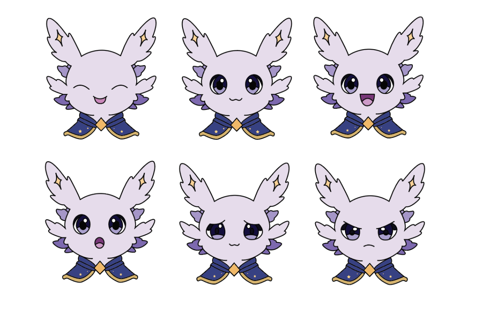
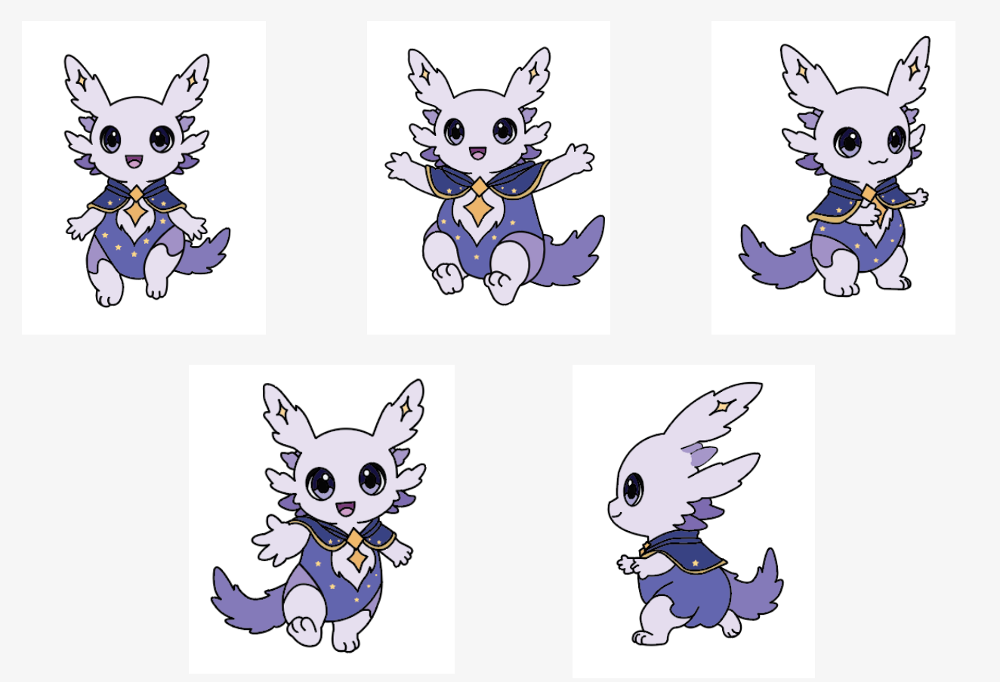
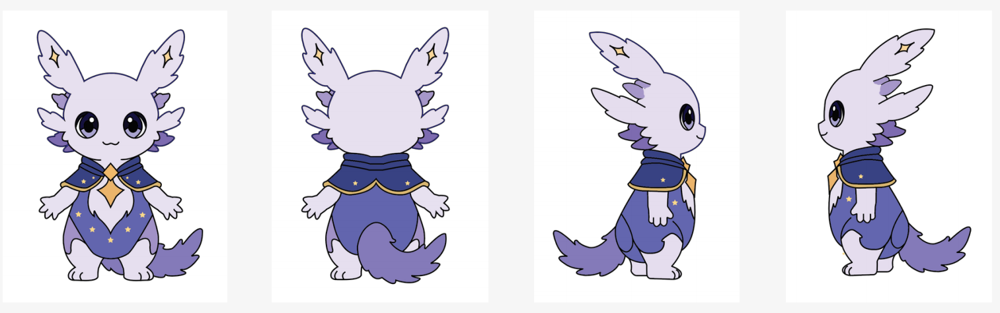

2D ANIMATION
Fantasy Character Animation
A 2D character animation project featuring a cute fantasy creature, bringing the character to life through smooth and expressive movements.
DURATION
0:58
RESOLUTION
1920 x 1080 (Full HD)
FORMAT
MP4
SOFTWARE
Adobe Animate, Adobe Photoshop
DESIGN CONCEPT
A lovable fantasy creature designed with a magical and gentle personality. The animation aims to showcase its expressions and movements in a fun and engaging way.
KEY FEATURES
- Expressive facial expressions
- Smooth character movements
- Cute and charming design


